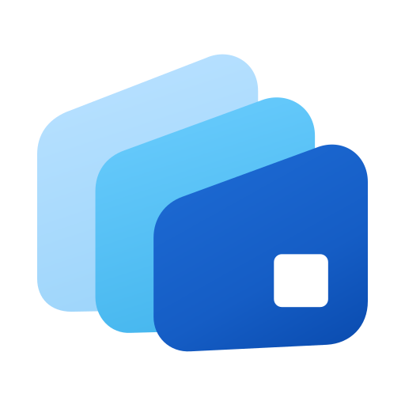
Originale Farbwelt
Drei App-Karten, weiche Verläufe und der quadratische Ausschnitt.
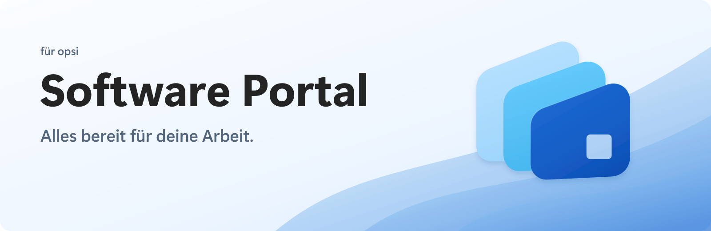
Echte Vektoren · transparente PNGs · gemeinsame Geometrie

Drei App-Karten, weiche Verläufe und der quadratische Ausschnitt.
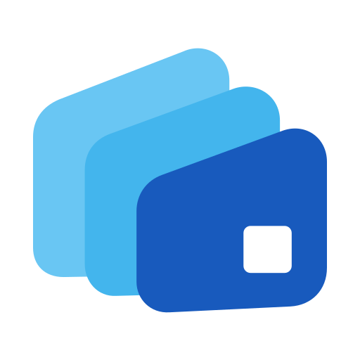
Alle Schriften sind in Pfade umgewandelt.
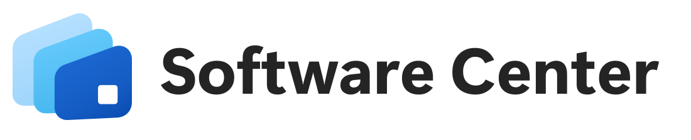
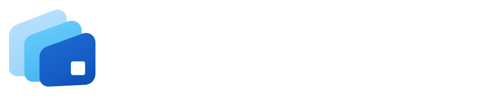
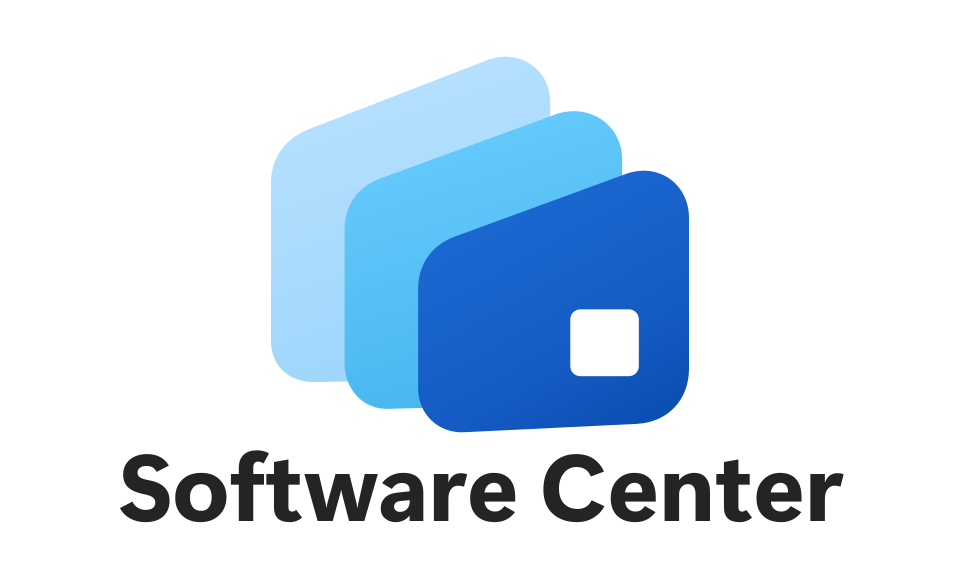
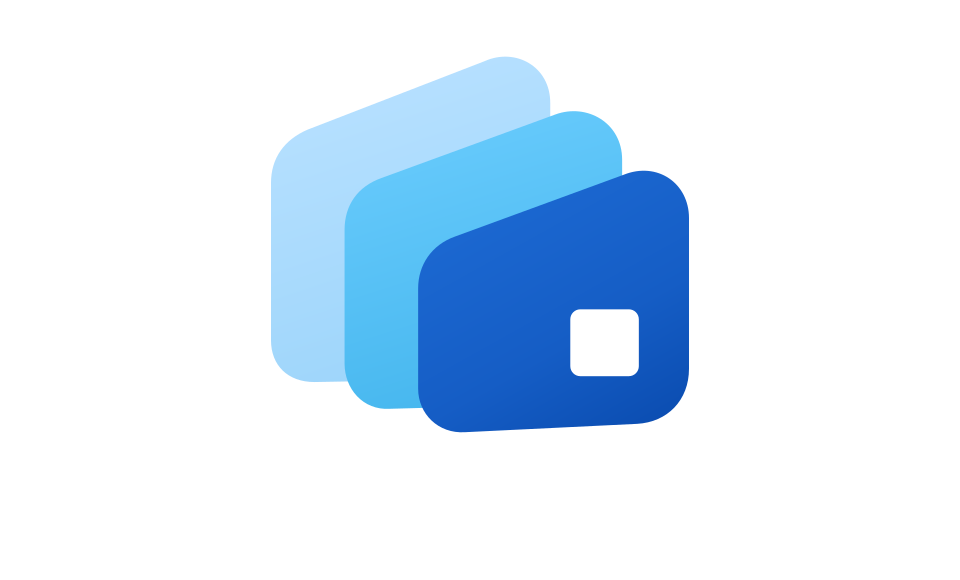
16–2048 px · ICO · ICNS · native Plattform-Exporte
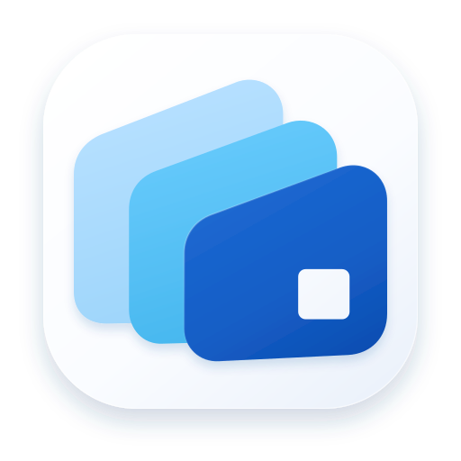
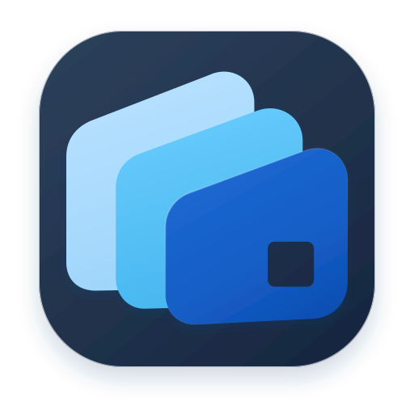
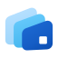
64 pxBanner · 1600 × 520 · zusätzlich als 2×-PNG
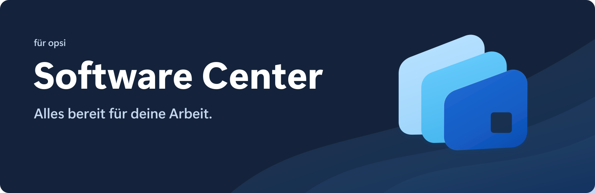
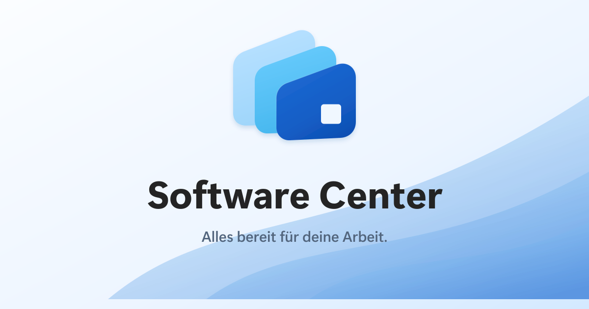
Segoe UI Variable. 700 für die Wortmarke, 600 für Überschriften. Die SVG-Schriftzüge bestehen vollständig aus Pfaden. Mindestabstand um das Zeichen: die Breite seines quadratischen Ausschnitts.
Das große Logo links oben auf der Konzepttafel ist die Formvorlage. Die übrigen Varianten verwenden dieselben Konturen. Feine Rastertexturen der Vorlage sind durch skalierbare Materialverläufe ersetzt. Branding-Hinweise lesen.
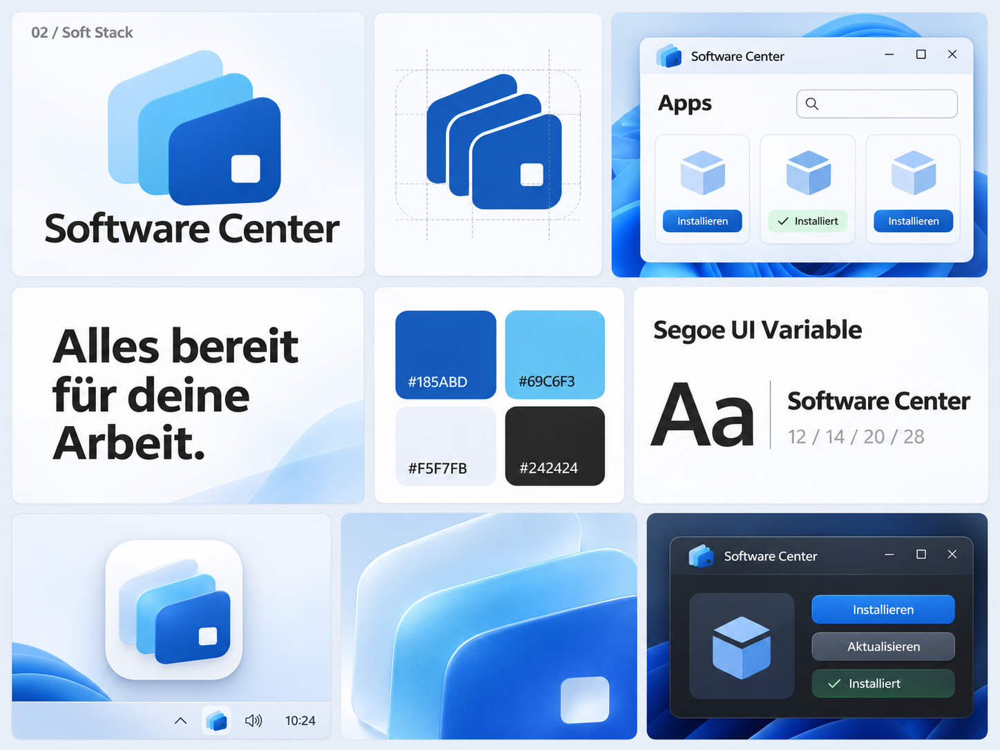
02 Soft Stack
Drei Karten. Ein Software Center.
Vorlage in Originalgröße ↗